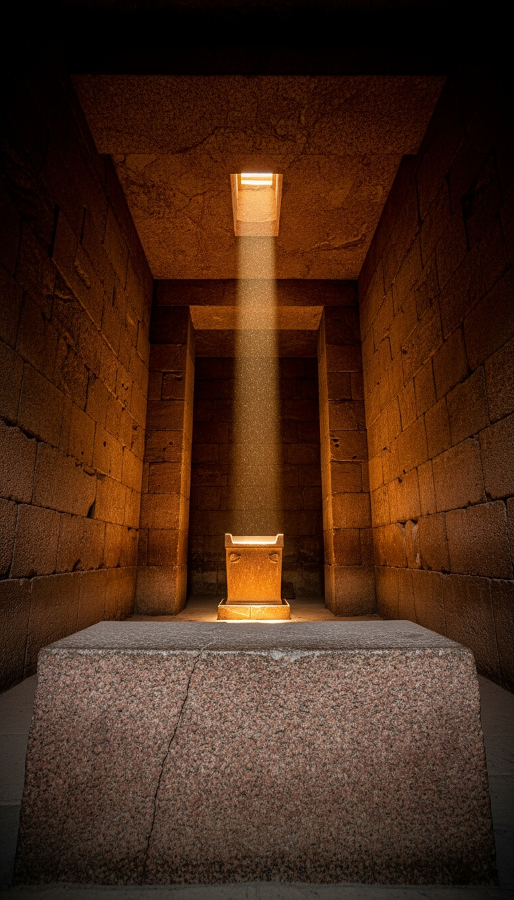

The Great Pyramid is a tuned instrument. Scientists published the measurement in May 2026, in a peer-reviewed journal, with sensors placed inside the structure. The frequency is 2.3 hertz. Egyptology still calls it a tomb.
That frequency sits below human hearing in the infrasound range, where the body absorbs vibration instead of registering it as sound. The builders of the largest precision structure in the ancient world did not stumble into this. The frequency is a design decision. The chamber at the heart of the pyramid was built from a material that converts mechanical vibration into electrical charge. These are not coincidences. They are specifications.

The Scientists Who Ran the Numbers
Mohamed ElGabry, seismologist at Egypt's National Research Institute of Astronomy and Geophysics, led the research team. The study appeared in Scientific Reports in May 2026. ElGabry's group placed seismic and acoustic sensors at multiple interior points and ran the pyramid through a full frequency analysis. The resonant peak registered at 2.3 hertz. This measurement came from instruments inside the structure, not from exterior modeling or theoretical projection.
2.3 hertz is infrasound. The human hearing floor sits at 20 hertz. Everything below that threshold bypasses the ear and enters the body directly. Pressure waves at 2.3 hertz produce documented physiological effects: chest wall vibration, spatial disorientation, altered perception in enclosed spaces. Every person who entered the King's Chamber in antiquity felt the pyramid before they understood it.
Why the King's Chamber Cannot Be a Tomb
The King's Chamber sits at the geometric center of the pyramid's superstructure. Not near it. At it. The room measures 10.47 meters long by 5.23 meters wide, a ratio of almost exactly 2:1. A 2:1 room is a standing wave box. Acoustic engineers use this ratio deliberately when designing recording and resonance spaces because it doubles the fundamental frequency of the cavity. Someone knew this ratio produced a specific acoustic result, and they built a room around it.
The walls, floor, and ceiling are Aswan granite. Every block. Aswan granite was quarried five hundred miles south, transported by Nile barge and land sled, and placed with tolerances measured in fractions of a millimeter. The builders passed over every limestone quarry between Giza and Aswan. Limestone was closer, cheaper, and fully adequate for every other chamber in the structure. They chose granite for this room and no other. The logistics of that single decision represent one of the largest deliberate material transport operations in the ancient world, executed for one underground room.
The sarcophagus inside the chamber is also Aswan granite. It rings when struck, a clear tonal resonance that researchers including independent investigator John Anthony West documented across repeated site visits in the 1990s. The sarcophagus sits at the exact center of the room's long axis, not pushed against a wall, not placed in a corner. Center placement in a resonant cavity changes the acoustic behavior of the entire room. That is not interior design. That is the positioning of a transducer element inside a tuned space.
Quartz Does Not Belong in a Burial
Aswan granite contains between 20 and 30 percent quartz crystal by composition. Quartz is piezoelectric. Jacques and Pierre Curie published this property in 1880 in Comptes Rendus de l'Academie des Sciences. Squeeze a quartz crystal and it generates an electrical potential. Vibrate it at its resonant frequency and it accumulates charge, then releases it. This is not a fringe property. Every quartz oscillator in every watch, every signal processor, every digital timing device on earth operates on this exact mechanism.
The King's Chamber is a room built from a piezoelectric material, placed at the resonant center of a 2.3-hertz amplifier. That combination does not appear by accident in a culture that built every surrounding structure from non-piezoelectric limestone. The builders knew Aswan granite was different. They went five hundred miles to get it. They used it for one room. The selection has a technical reason, and the technical reason is in the material properties, not in the symbolism of a pharaoh's status.
The deepest room in the pyramid is a granite box, inside a stone amplifier, tuned to a frequency you cannot hear but cannot escape.
What 2.3 Hertz Does to a Human Body
NASA engineer Vic Tandy brought infrasound into rigorous scientific literature in 1998, publishing in the Journal of the Society for Psychical Research. Tandy documented that standing waves at 18 to 19 hertz produce visual anomalies and a physical sense of presence in enclosed rooms. He later extended this work to historic sites with recurring reports of anomalous sensory experience, measuring infrasound at each location and connecting specific frequencies to specific physiological responses in subjects who had no prior knowledge of the acoustic measurements.
The bioacoustics research extends into lower ranges. Studies from the 1970s onward document that infrasound between 7 and 12 hertz overlaps with the resonant frequencies of the human eye socket, the thoracic cavity, and certain brain oscillation patterns. 2.3 hertz is lower still, in the range where large-organ resonance becomes the dominant effect. A chamber tuned to 2.3 hertz does something specific and measurable to a person standing inside it. The priests and initiates who used this room for ritual purposes were not selecting an aesthetic environment. They were selecting a physiological state, and the architecture delivered it on demand.
Egyptology's response to the infrasound research is silence. ElGabry's team published in a peer-reviewed journal in 2026. The acoustic data is in the literature. The field proceeds with the tomb narrative as if the measurement does not exist.
Everything a Tomb Has That This Chamber Doesn't
Egyptian burial practice across three thousand years follows consistent, documented patterns. The chamber walls carry inscriptions from the Pyramid Texts or the Book of the Dead. The sarcophagus is inscribed with the name and titles of the occupant. Grave goods accompany the body. Canopic jars hold the preserved organs. The room documents the afterlife journey of the pharaoh in text and image on every available surface.
The King's Chamber has none of this. Not one hieroglyph on any of the four granite walls. No Pyramid Texts. No inscriptions of any kind on any surface. The sarcophagus is uninscribed and was found empty. No mummy was ever recovered. No canopic jars. No grave goods of any period. When Giovanni Belzoni entered the chamber in 1818 in the first recorded Western penetration of the room, he found unmarked granite walls and an empty granite box. Nothing has been found since because nothing was ever placed there.
The Red Pyramid at Dahshur has inscribed chambers. The Bent Pyramid at Dahshur has inscribed chambers. The Pyramid of Unas at Saqqara has walls covered floor to ceiling with Pyramid Texts, the oldest religious corpus in the world. The Great Pyramid, the largest, the most precisely constructed, the one that required the most granite hauled from the greatest distance, has nothing written on any wall in any room. That is not what absence of evidence looks like in this culture. That is a room that was designed for a purpose that required no inscription, because inscription was not part of the function.
Scientists in May 2026 published measurements of what the builders installed in 2560 BCE. The frequency is 2.3 hertz. The material is piezoelectric. The geometry is a standing wave amplifier. The chamber is empty of every marker of burial purpose and complete in every requirement of a resonant transducer. These facts are not contested. They are in the peer-reviewed literature.
The machine is real. The measurement is confirmed. What is not confirmed is what the King's Chamber was converting energy into, and where that output was directed. The answer is not in the room itself, because the room is one component inside a larger system. The rest of that system is still under the plateau. No one has been authorized to look for it.
Before you go
7 books the Vatican doesn't want you reading. Free PDF, the texts they cut, with sources. Joined by 140+ Inner Circle members.
No spam. Unsubscribe anytime.
Go deeper
The Hidden Canon, Vol. I, Enoch. Jubilees. Thomas. Mary. Judas. 90 pages, 14 chapters, every receipt cited. The books your Bible quietly removed.
Read the Canon →Books that informed this investigation
As an Amazon Associate, Hidden Epoch earns from qualifying purchases. Cost to you: nothing.
Research safely
The VPN we use to research without being tracked. First 3 months free.
Get NordVPN →